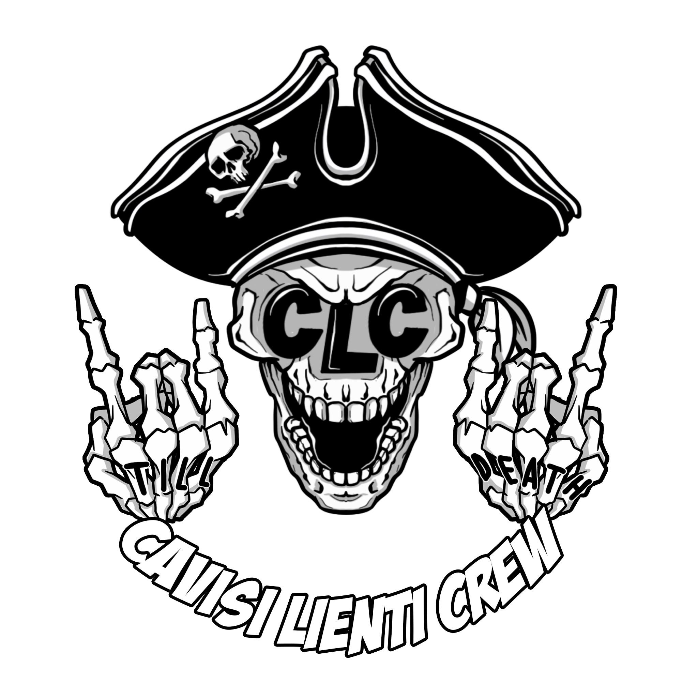
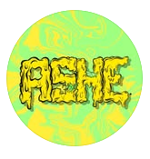
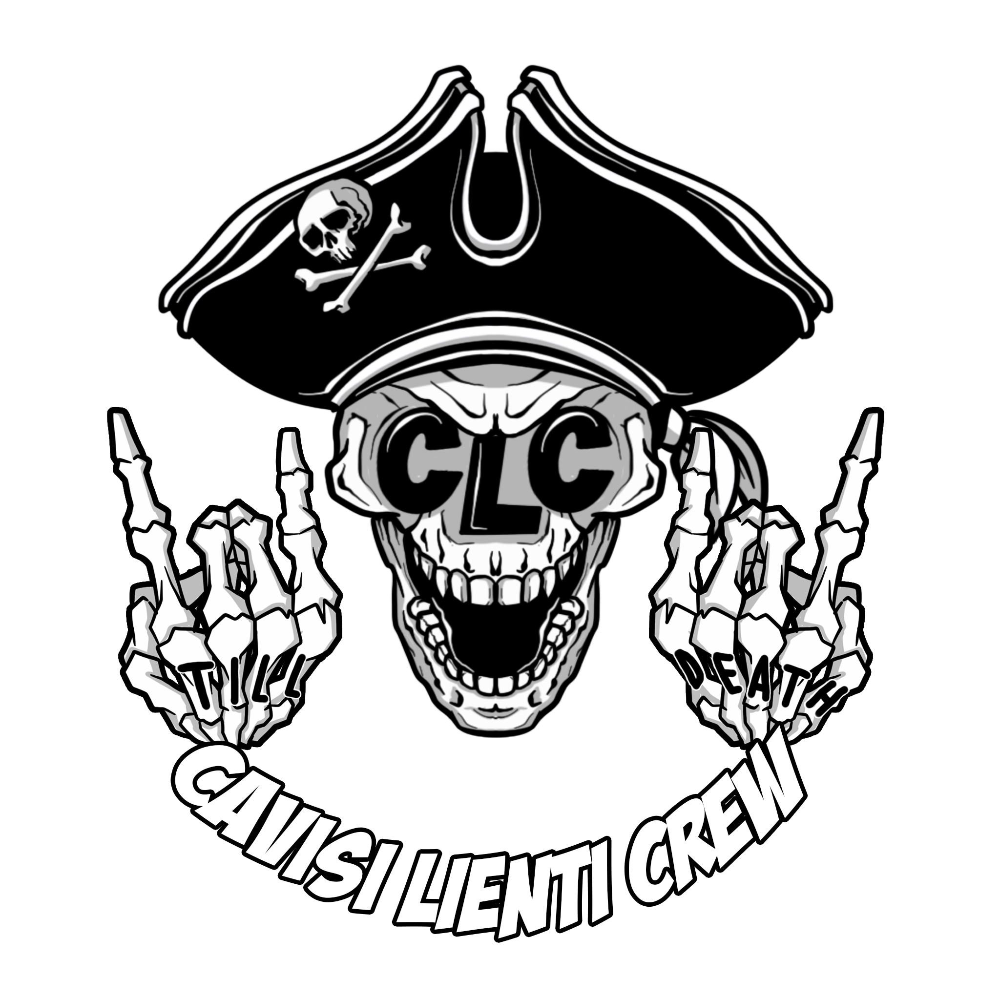
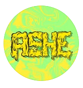
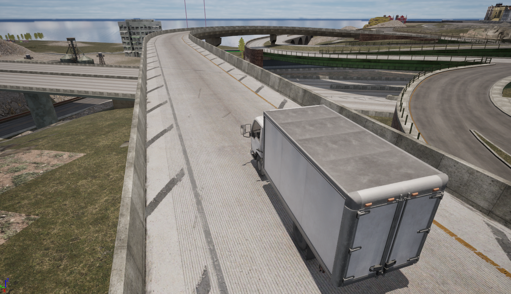
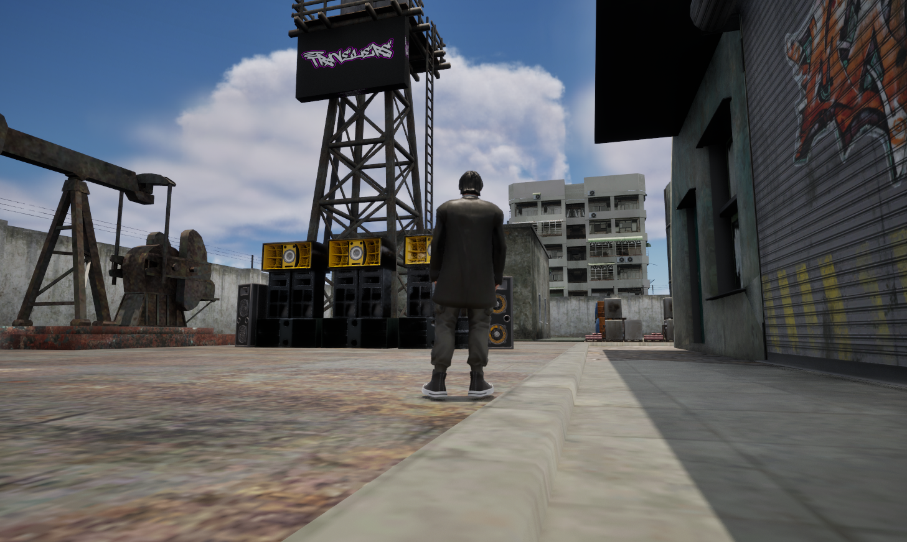
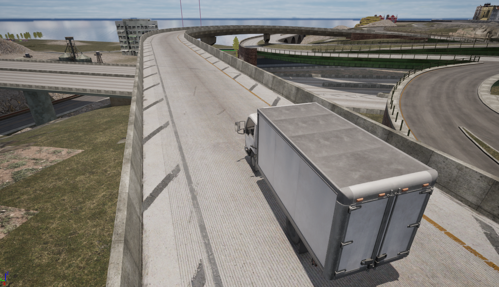
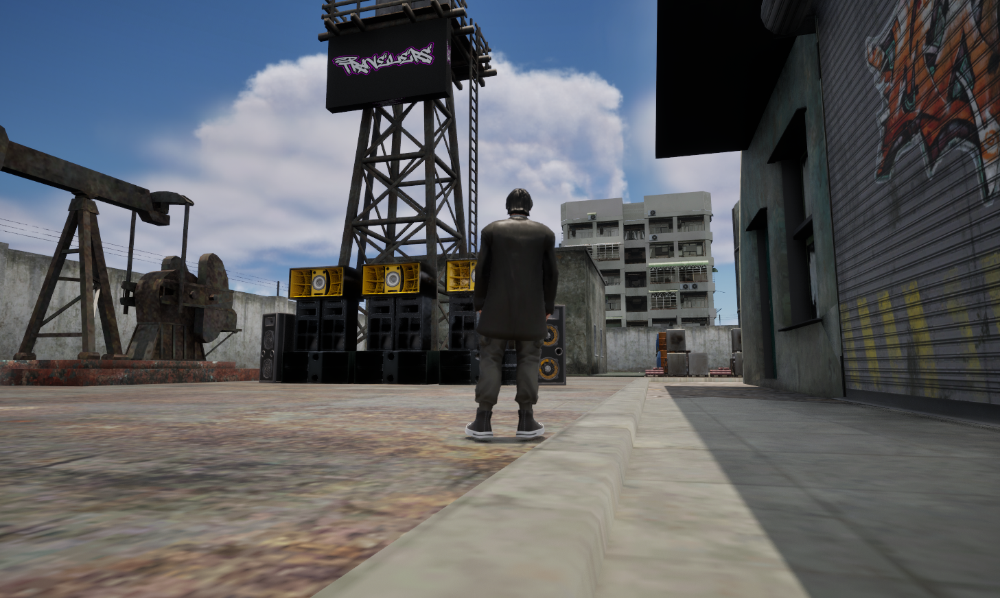

Free parties focus on the concept of free access and self-management.
They are organised outside commercial circuits, in stark contrast to mainstream music and large industrialised festivals.
Being “free” is not just about the absence of costs, but also about the idea of horizontal participation and collective creation.
Do It Yourself (DIY): A philosophy that permeates these events, in which every participant actively contributes.
Being ‘free’ is not just about the absence of costs, but also about the idea of horizontal participation and collective creation.
TAZ - Temporary Autonomous Zone
The term TAZ (Temporary Autonomous Zone) was introduced by the anarchist philosopher Hakim Bey (pseudonym of Peter Lamborn Wilson)
in his 1991 essay.
It refers to a form of resistance to the control structure of the state and capitalism through the creation of temporary spaces of freedom.
A TAZ is a physical or symbolic space in which rules and control structures are suspended.
It does not aim to permanently subvert the system, but creates a temporary “bubble” of freedom in which people can express themselves without constraints.
It operates on principles of self-management, self-organisation and mutual aid.
Connection to raves and free parties:
Raves and free parties are perfect examples of TAZs, as they take place in ephemeral locations and escape institutional regulation.
They dissolve before they can be assimilated or repressed, leaving a cultural and symbolic imprint.
Philosophical impact:
The TAZ represents an anarchist experiment, where creativity, collaboration and individual freedom are at the centre.
It is a model for new forms of resistance and organisation in contemporary society.


 






 


